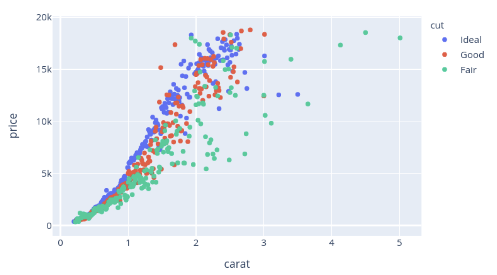
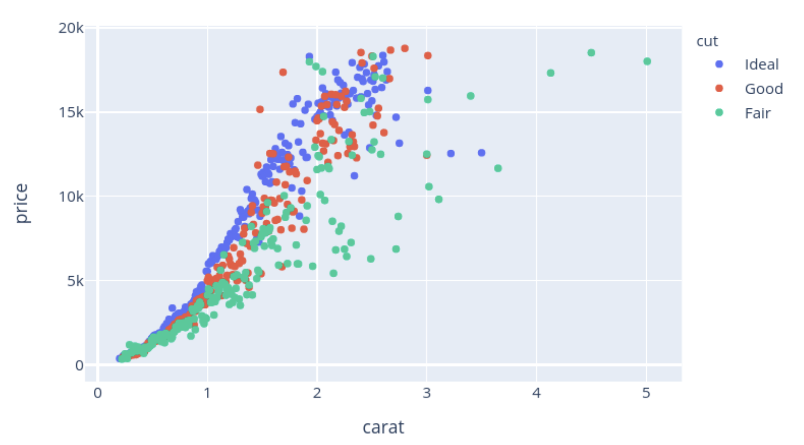

Area - This visualizaton is an area mark as it denotes the states within the United States on a geographic map that already have a certain size. This is a good decision for this visualization since states has both dimensions of its size constrained intrinsically and implementing additional attributes would defeat the purpose of using the area mark.
Channels
Color (Hue)
One channel of the area mark is to use red and blue color hues as shaded regions to depict the quantitative variations of the electoral votes between different states on the map. This is an identity channel as it helps us diffrentiate which states are made up of Clintons' or Trumps' electoral votes if only women were to vote in 2016.
This channel is a good mapping choice for this visualization as it helps the users of this visualiztion view and conclude the candidate of which most eletoral votes were made towards in each individual state efficiently.
Position
Another channel of the area mark is the choice to use positioning of the states within the geographic map. Changing the position of the state would defeat the purpose of using an area mark for this visualization which is how we can indicate this is the use of a position identity channel.
This is a good mapping since it depicts the candidate that recieved the majority of electoral votes within each spatial region.
Colormap(s)
Categorical
This is a categorical colormap that uses color to encode categories and groupings of each candidate. The blue and red colors are intended to color multiple individual spatial regions to make them distinguishable from each other by which candidate recieved the majority of the electoral votes in that region.
This choice of colormap attribute type is significant as it maps the data values to two distinct colors, allowing users to identify categories of values quickly and easily through association which is why this is an overall good mapping choice. The visualization uses the choice to have two specfic bins to diffrentiate among two candidates; explicitly through this deliberate data transformation, we are taking into account the nature of the data and task at hand. This is done by seperating the candidates who recieved the majority of electoral votes within each state; essentially encoding the attribute in each bin with a distinguishable color.
Marks
Point - The marks for this image is are uniform point marks that are used to encode a position of a data point relative to launch angle and exit velocity.
Channels
Color Luminence
One channel is varying the color luminance of both the purple and orangle colors depending on where the point values were at on a scale of scoring values. This is an identify channel as it helps distinguish whether the batted ball was average, below average, or above average.
This channel is a good mapping choice as it helps the user to contextualize the data and assess which batted balls in the cluster of points were more valuable.
Position
The channel of the area mark is the choice to use position of points to establish a relationship between the launch angle of batted balls versus exit velocity.
This channel is a poor mapping choice in itself as there are two many points for a user to determine by themselves what the data means without further context of visual labels.
Colormap(s)
Sequential
This is a categorical colormap that uses color and luminence to encode the scoring value of batted balls during the 2015 MLB season. The purple, orange, and white with varying levels of luminence are meant to clearly distinguish the value of balls in the large cluster of points.
This choice of colormap attribute type is significant as it maps the values to three colors in relation to the scoring value of a batted ball. These are three specific bins that correspond to scoring values of below average, average, or above average. The color luminence further encodes on these three bins but makes specific ranges of values more distinguishable.
Marks
Point - This visualizaton is a point mark as it encodes information concerning the relationship between diamond carats and price, ultimately conveying it in terms of the area of the graph, the x and y axes.
Channels
Color (Hue)
One channel of the area mark is to use blue, red, and green color hues to depict the qualitative variations of the diamonds according to the number of carats the diamond is made up of. This is an identity channel as it helps us differentiate which diamonds have the best quality, categorized by ideal, good, and fair.
This channel is a good mapping choice for this visualization as it helps the users of this visualization view and conclude whether a relationship exists among number of carats, price, and overality quality in the case that this is a question they encounter and are curious about.
Position
Another channel of the area mark is the choice to use positioning of the points to propose a relationship between the price and number of carats the diamond in made up of.
In the context of visual encoding, the position channel intrinsically conveys information of the diamond in question, in terms of attrubutes such as the number of carats and its' price, ultimately being the appropriate vehicle for conveying the information necessary for the user through the area and shape of the data graph across the x and y axes.
Colormap(s)
Sequential
This is a categorical colormap that uses color to encode groupings of the quality of each diamond in question. The blue and red colors are intended to color multiple individual spatial regions to make them distinguishable from each other by the quality of each diamond according to its corresponding price and carat number, essentially where it falls in the graph.
This choice of colormap attribute type is significant as it maps the data values to three distinct colors, allowing users to identify the quality of the diamonds easily through association. The visualization uses the choice to have three specfic bins to differentiate among the quality types of the diamonds. This is done by seperating the quality types ideal, good, and fair; essentially encoding the attribute in each bin with a distinguishable color.

 
